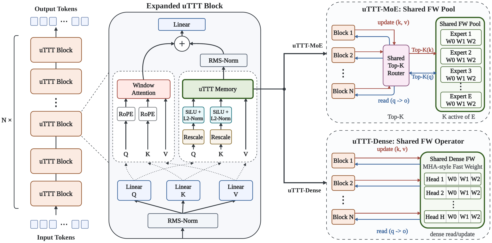
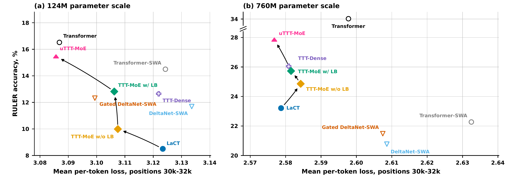
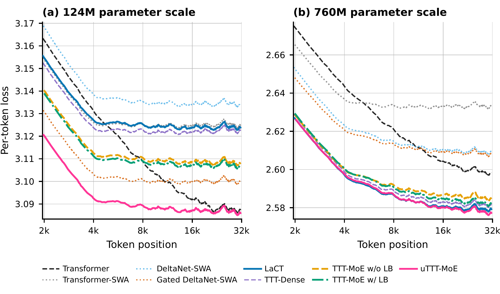
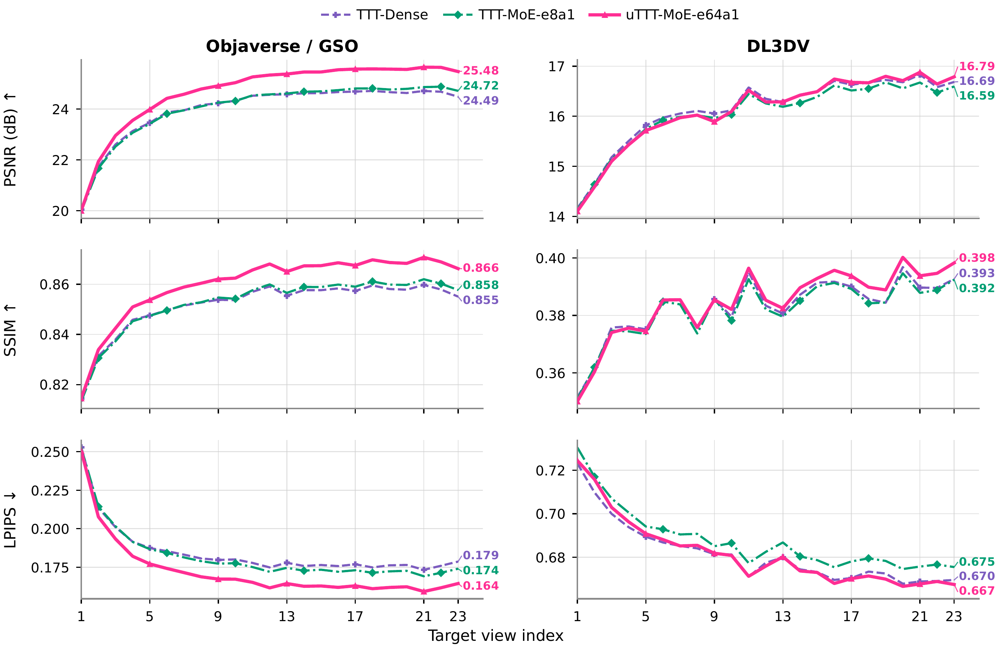

1University of Wisconsin–Madison 2University of Michigan 3Adobe *Equal contribution
TL;DR — Test-Time Training compresses context into fast weights, and existing designs make those fast weights layer-private: every layer owns a state no other layer touches. We argue this is an arbitrary restriction and study universal fast weights, where the whole depth stack shares one state or one pool of states — uTTT-Dense, a shared dense operator, and uTTT-MoE, a globally shared expert pool, with TTT-MoE, a routed pool that stays layer-local, as the controlled midpoint.
Sharing also changes what the model is: one state persisting across depth makes the layer index a second recurrence axis, so an L-layer stack unrolls into a single recurrence over (chunk, layer) pairs, and state written deep at one chunk is read shallow at the next. Layer-private TTT is the fixed-partition special case of that model.
Across 32K-context language modeling and LVSM-style novel view synthesis, moving fast weights from layer-private, to layer-local routed, to a globally shared pool improves long-context retrieval monotonically — RULER accuracy from 8.5 to 15.5 at 124M and 23.2 to 27.8 at 760M, and object-level rendering from 24.5 to 25.5 dB — though the advantage concentrates at shorter contexts and does not yet hold at the longest evaluated length.


Long-context language modeling at 32K. PTL is mean next-token loss at positions ≥30K on Book-3; RULER is accuracy averaged over four evaluation lengths. Bold marks the best bounded-state model; the full-attention Transformer† is a reference whose key–value cache grows with context.
| Model | PTL ↓ (124M) | RULER ↑ (124M) | PTL ↓ (760M) | RULER ↑ (760M) |
|---|---|---|---|---|
| Transformer† (full attention) | 3.0869 | 16.52 | 2.5978 | 34.16 |
| LaCT | 3.1234 | 8.50 | 2.5787 | 23.21 |
| TTT-Dense | 3.1219 | 12.65 | 2.5809 | 26.05 |
| TTT-MoE w/o LB | 3.1075 | 9.99 | 2.5843 | 24.86 |
| TTT-MoE w/ LB | 3.1062 | 12.82 | 2.5815 | 25.73 |
| uTTT-MoE | 3.0857 | 15.46 | 2.5768 | 27.85 |

Sharing the bank is also the fastest of the three regimes. One global pool is written by a single grouped kernel per chunk, where the layer-local pools pay for L small updates; measured at 124M with matched activation checkpointing and full backward through the recurrent state:
| Regime | Experts stored | tok/s/GPU ↑ | min / 1K steps ↓ | PTL ↓ | RULER ↑ |
|---|---|---|---|---|---|
| TTT-Dense (layer-private) | 1 | 29,614 | 36.9 | 3.1219 | 12.65 |
| TTT-MoE w/ LB (layer-local) | 4 | 23,888 | 45.7 | 3.1062 | 12.82 |
| uTTT-MoE (universal) | 48 | 32,782 | 33.3 | 3.0857 | 15.46 |
The largest pool is also the fastest. Throughput is implementation-sensitive: three implementations of the same 48-expert global pool span 30,644–32,782 tok/s/GPU, so cross-architecture throughput comparisons should be discounted accordingly.

Novel view synthesis, full-test PSNR (mean over target views 1–23, then over scenes; 1,019 GSO scenes and 140 DL3DV scenes).
| Model | PSNR ↑ (Objaverse/GSO) | PSNR ↑ (DL3DV) |
|---|---|---|
| TTT-Dense | 23.99 | 16.14 |
| TTT-MoE-e8a1 (layer-local) | 24.03 | 16.05 |
| uTTT-MoE-e64a1 (global, top-1) | 24.68 | 16.12 |
| uTTT-MoE-e64a8 (global, top-8) | 25.56 | 16.66 |
| Transformer† (full attention) | 25.36 | 17.41 |
Numbers from the paper's current version; full tables, confidence intervals, and the balancing and capacity sweeps are in the paper and reproducible from the released configs.
uTTT-MoE renderings on held-out scenes, teacher-forced conditioning on ground-truth views 0…k−1.